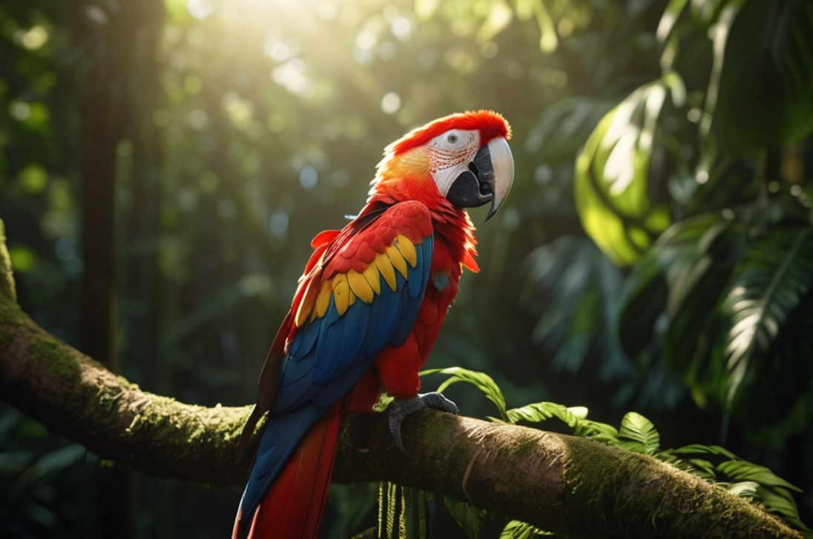

Paoušek Ara
„Strážce barevné pravdy v korunách stromů“

🦜 „Každé pírko je vzpomínka na slunce.“
- Povaha: Energický, výřečný, hravý
- Bydliště: Vrcholky deštných pralesů
- Oblíbená činnost: Mluvení s větrem a smích s listy
Vidíš ho dřív, než ho slyšíš. A když promluví, zní to jako smích kapek v létě. Jeho barvy nejsou náhodné — každá značí jedno tajemství. Ara přináší příběhy, které šeptá příroda, a rád je předá dál… pokud si sedneš vedle něj a chvíli jen posloucháš.